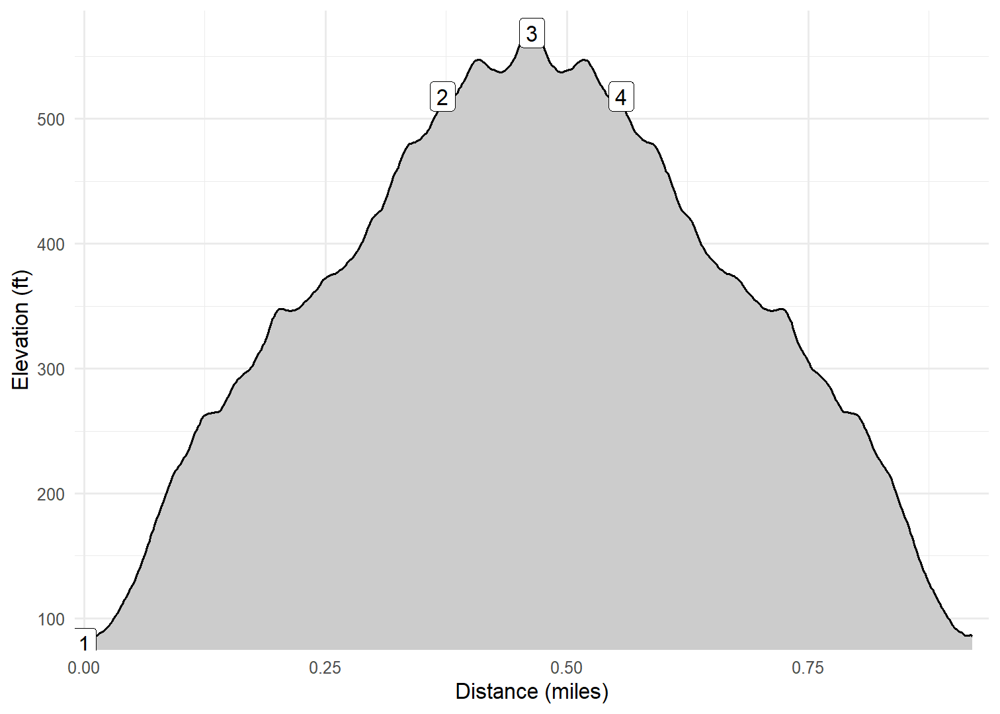

Lanikai Pillbox via Ka’iwa Ridge
Kailua, Oahu, HI
On April 7, 2026 Kim and I hiked the Ka’iwa Ridge trail to the Lanikai Pillbox. This was a moderately rugged trail that climbs fairly steeply in places, but is not difficult as attested by the number of other hikers on the trail. The views from the top were beautiful and well worth the effort. The trail appeared to continue after the second pillbox, but it was not clear that the trail was “open” so we descended and went for a swim in the ocean!
Walk-Specific Map
Elevation Profile

Images

LNKAIPB01: Sign at start of trail

LNKAIPB01: Looking up to first pillbox

LNKAIPB02: Looking beyond second pillbox

LNKAIPB02: Looking back to first pillbox

LNKAIPB01: A cactus
GPX Download
A sanitized GPX file of our hike is here.
Summary Information
| NUM | trackID | Primary | Description | Distance | CumDist | DeltaElev |
|---|---|---|---|---|---|---|
| 1 | LNKAIPB01 | Lanikai Pillbox via Ka’iwa Ridge | Street entrance to First pillbox | 0.37 | 0.37 | 438 |
| 2 | LNKAIPB02 | Lanikai Pillbox via Ka’iwa Ridge | First pillbox to Second pillbox | 0.09 | 0.46 | 51 |
| 3 | LNKAIPB02 | Lanikai Pillbox via Ka’iwa Ridge | Second pillbox to First pillbox | 0.09 | 0.56 | -51 |
| 4 | LNKAIPB01 | Lanikai Pillbox via Ka’iwa Ridge | First pillbox to Street entrance | 0.37 | 0.93 | -438 |